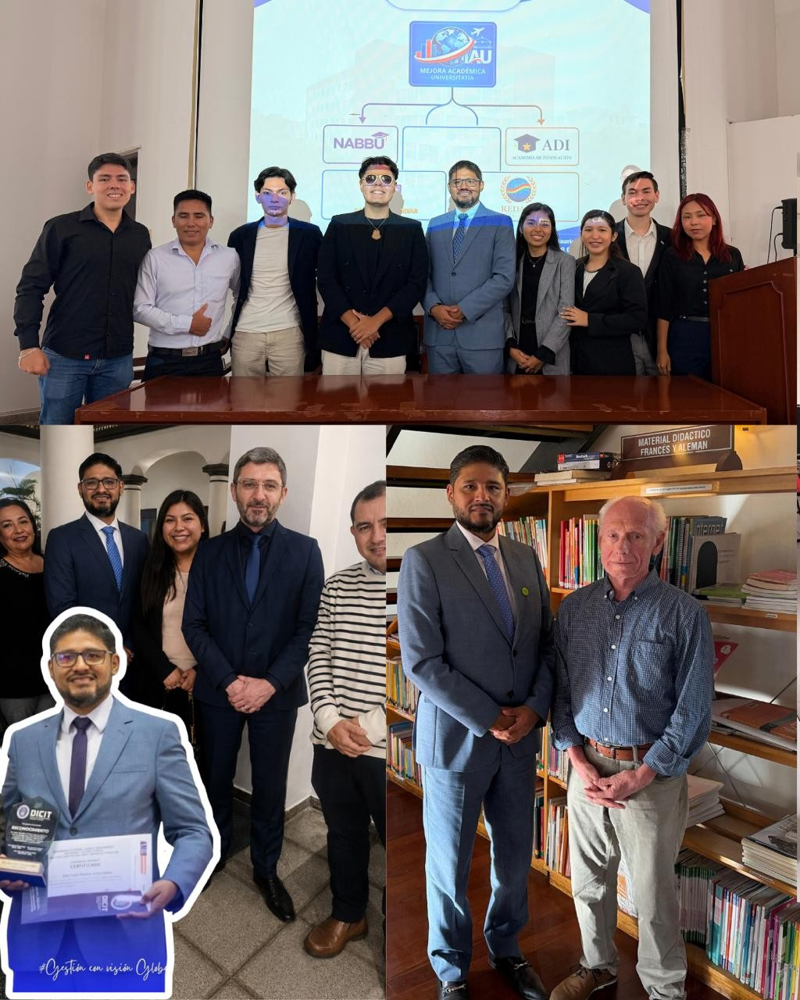
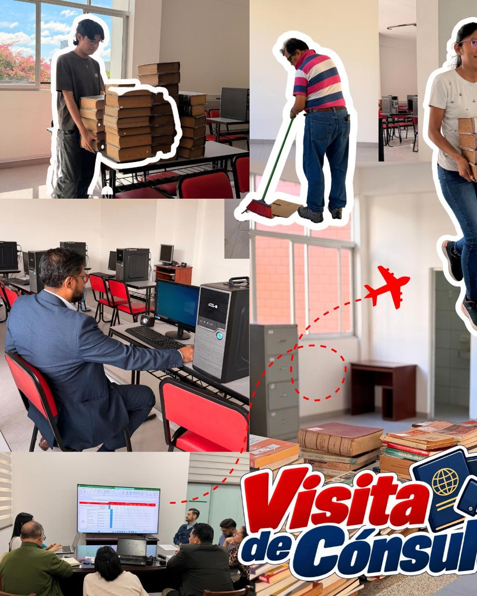
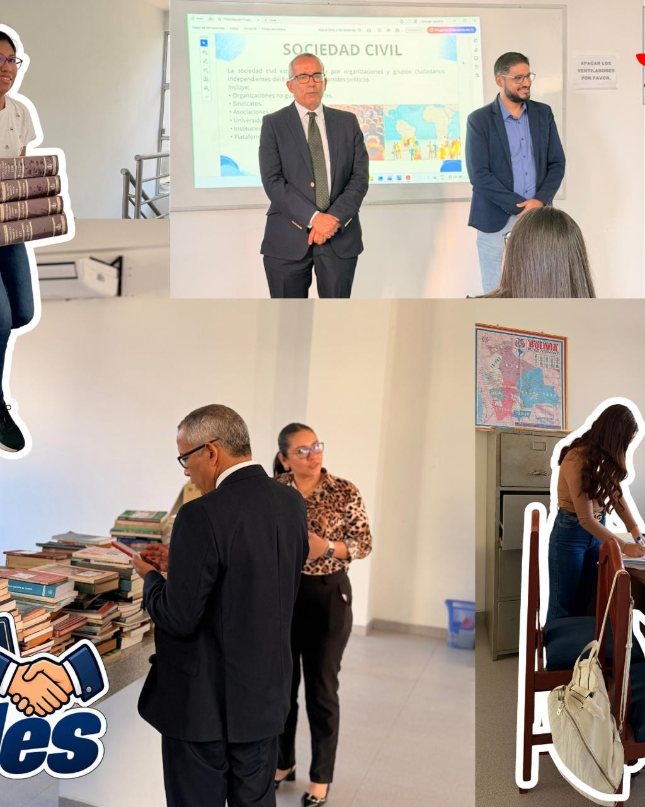
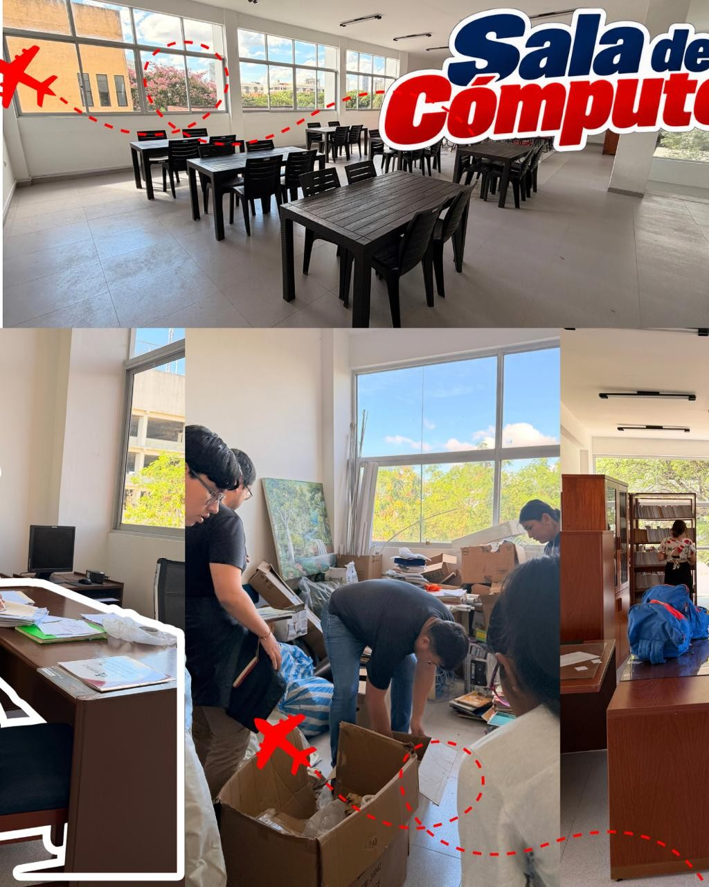
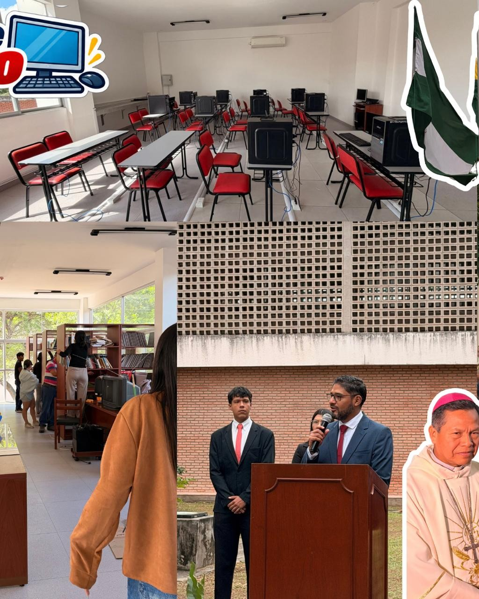
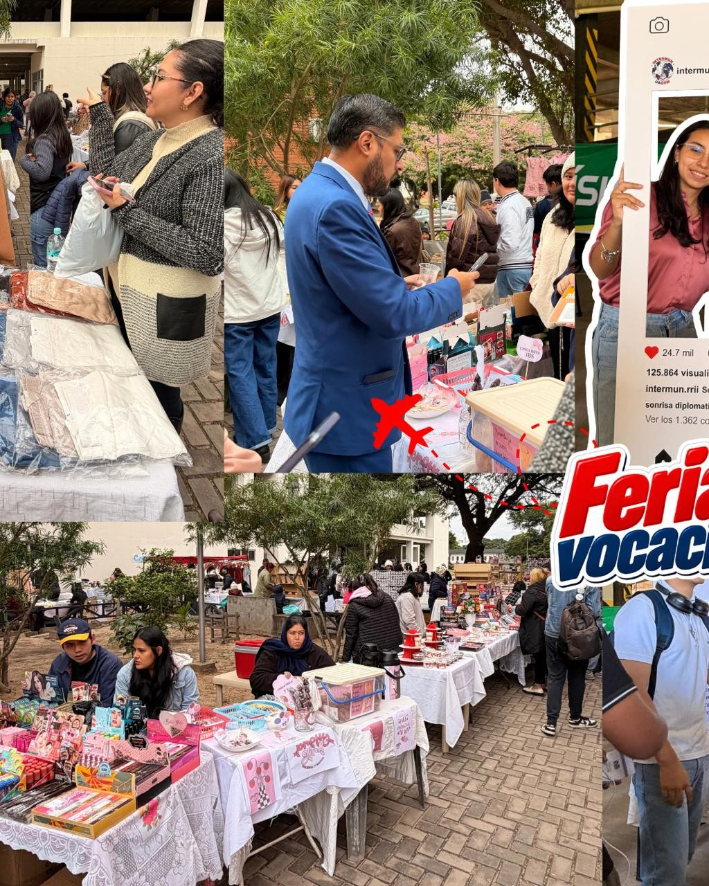
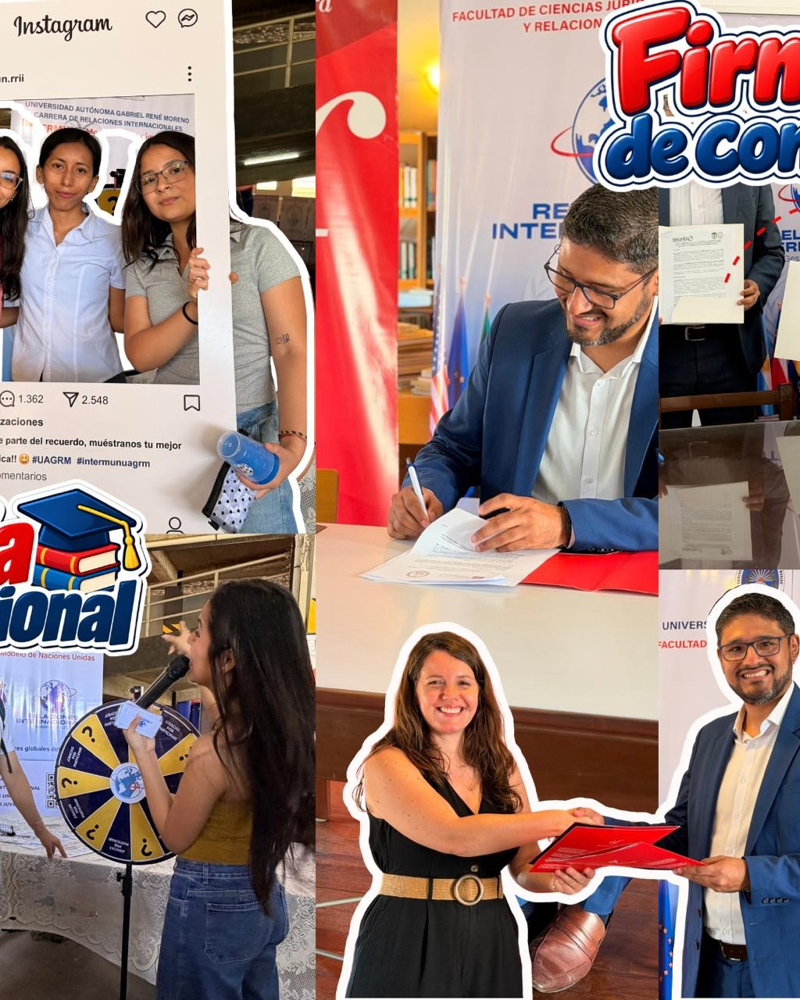

Universidad Autónoma Gabriel René Moreno
Informe
de Gestión
Dr. PhD Carlos Mauricio
Arroyo Balboa
Director de Carrera · Relaciones Internacionales
Gestión 2025-2030
Desliza para abrir
Informe de gestiónRelaciones Internacionales · UAGRM
2

Informe de gestiónRelaciones Internacionales · UAGRM
3

Informe de gestiónRelaciones Internacionales · UAGRM
4

Informe de gestiónRelaciones Internacionales · UAGRM
5

Informe de gestiónRelaciones Internacionales · UAGRM
6

Informe de gestiónRelaciones Internacionales · UAGRM
7
Informe de gestiónRelaciones Internacionales · UAGRM
8
Informe de gestiónRelaciones Internacionales · UAGRM
9
Informe de gestiónRelaciones Internacionales · UAGRM
10
Informe de gestiónRelaciones Internacionales · UAGRM
11

Informe de gestiónRelaciones Internacionales · UAGRM
12

Informe de gestiónRelaciones Internacionales · UAGRM
13
Informe de gestiónRelaciones Internacionales · UAGRM
14
Informe de gestiónRelaciones Internacionales · UAGRM
15
Relaciones Internacionales · UAGRM
Informe
de Gestión
Dr. PhD Carlos Mauricio
Arroyo Balboa
Director de Carrera
Gestión 2025-2030